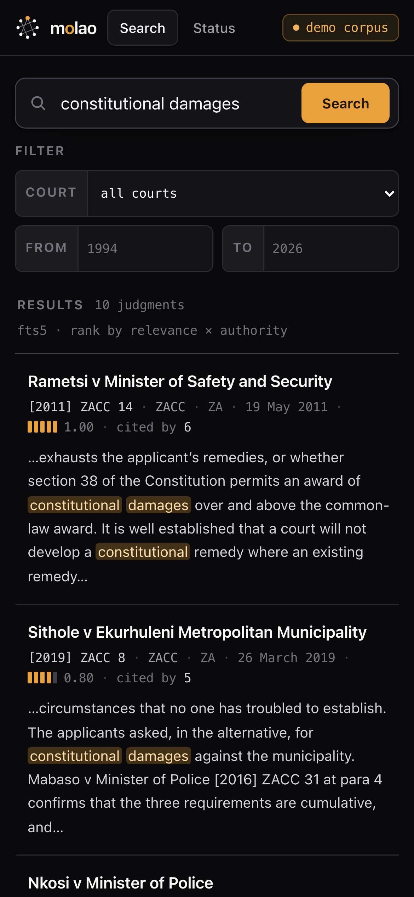
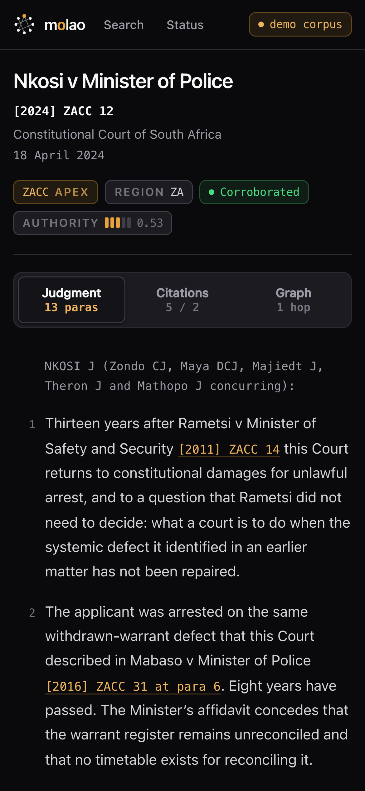
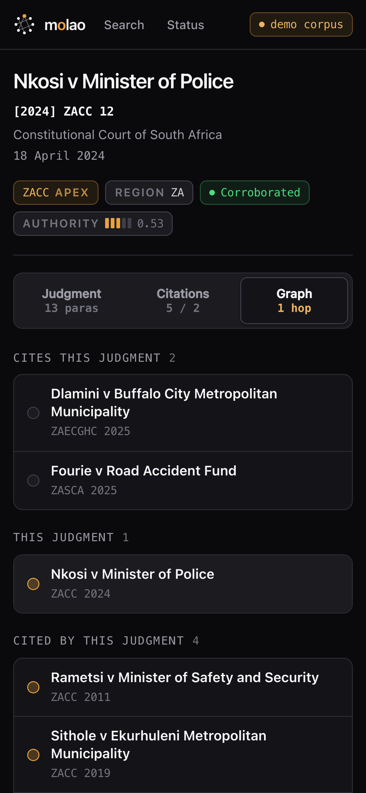

The law, held in common.
A judgment is a public document. Molao is the plainest possible way to keep a jurisdiction's case law readable, searchable and checkable by anyone — one binary, one file, working offline, owned by no one.
It is not a product and not a business. There is no hosted service to sign up for, no subscription, and no plan to add one. Law faculties, law societies, legal-aid organisations and individuals run nodes. Nobody bills anybody.
That case law can be published without a single publisher. A judgment's identity is the BLAKE3 hash of its canonical text, so two nodes that have never exchanged a packet agree on what the judgment is. A release is valid only when a quorum of independent organisations has signed it — and a threshold below two signers is refused in code, including for this project.
That this is a tradition, not an invention. The LII network — AustLII, BAILII, CanLII, NZLII, SAFLII, the AfricanLII members — has run free access to law for decades under the Free Access to Law Movement. Molao joins it, and adds content-addressed identity, threshold-signed releases, and a citator whose mechanical layer anyone can recompute.
- A node isone executable over one SQLite file
- Networkmakes no outbound requests of its own
- Accountsnone — and none planned
- Costfree, permanently; no hosted tier exists
- Jurisdictionnone hardcoded; courts load from data
- LicenceMIT or Apache-2.0
Decentralisation-ready, not decentralisation-running.
Version 0.1.0 is early, and the useful thing to say to a librarian or a dean is exactly which half is real. The trust model is built and tested. The corpus does not exist yet.
Built and tested today
- Hash-identified judgments — alter a paragraph and the id no longer matches
- Threshold-signed releases, chained by hash so a fork is detectable
- A citation graph verifiable by recomputation from a pinned extractor
- A node that runs standalone and fully offline
- Region profiles loaded from TOML at run time, with fourteen compiled in as the fallback
Not built, and said so plainly
- There is no bundled corpus — a node starts empty.
molao demoseeds a synthetic one - No public signed release exists yet. Releases move as plain files, mirrored by hand
- Peer-to-peer distribution is not live, and nothing in the packaging or transport path has carried a real release
- Treatment attestations are built and tested, but nobody has attested anything — there is no gossip, no authoring path and no UI, so a reader still gets no treatment signal
- The public append-only log is designed, not built
molao-ingestandmolao-indexare wired into the node, but no corpus has been assembled with them — a node still starts empty
The node crate and web UI are in progress: the API contract is specified and the core crates are complete, but the server is still being written. Run cargo run -p molao-node -- --help to see what your clone actually offers. Full status in the roadmap.
{kind=link}
What it does for someone reading the law
Before any of the cryptography matters, the thing has to be a usable law library. Search, a judgment set out as it was handed down, and citations that run both ways.
Search, then read as printed
Full-text search with court and year filters. A judgment opens as a structured document — parties, court, case numbers, date, coram, parallel reported citations, and numbered paragraphs as printed, so a pinpoint means what it says.
Citations both ways
Cases this judgment cites and cases citing it, each with the paragraph cited from and the pinpoint cited to.
Unresolved citations are shown as written, never hidden. A citator that quietly drops what it cannot resolve tells a lawyer the case cites less than it does. That is a commitment, not a default.
- Works completely offlineA node with a corpus on disk needs no peers, no relay and no internet. Pull the plug and it keeps serving the law. This is a hard guarantee, not a degraded mode — which is why peer-to-peer distribution will never be required to read the law.
- Nothing to administerOne executable, one SQLite file. No external database, no credentials, no certificates to rotate, no update check. Federations decay when the person running the node leaves; the defence is having nothing for them to have been maintaining.
- No telemetry, no phone-homeThere is no code to disable. One real limit, stated rather than glossed: a node's operator can see what its users search for. Molao makes no anonymity claim. If your research is sensitive, run your own node — it is free and works offline.
No single publisher — including this project
“No central server” is achievable, and Molao achieves it. “No central authority” is not, and claiming it would be dishonest. Somebody must attest that a particular hash is the real judgment: content addressing proves bytes have not changed, but it cannot prove the bytes were ever the judgment.
So the trust root is a quorum of independent organisations plus a public append-only log, not one operator. That is a large improvement over one database with one administrator. It is not trustlessness, and this page will not call it that.
verify() refuses it. No single party can publish a release, including the project that wrote the code — that is not a policy statement, it is what the function does.- Judgment ids are hashesA judgment's id is the BLAKE3 hash of its canonical text. Alter a paragraph and the id no longer matches — which is what makes a judgment from an untrusted peer safe to keep. How canonicalisation works.
- The citation graph can be rebuiltA pinned, deterministic extractor: anyone can re-run that exact version over the same corpus and must get a byte-identical graph. The citation grammar.
- Provenance is plural, and shownWitnesses fetch from the canonical source and sign the bytes they saw — one person's upload is not evidence. Every judgment shows its class: Corroborated, Single source, or Manually entered. Corroboration in full.
- Embeddings are excluded from releasesFloat inference is not reproducible across hardware, so a contributed index could only be trusted, never verified — and a poisoned index is worse than a poisoned document, because the text stays byte-perfect while retrieval quietly steers. A node may build its own unsigned, rebuildable local cache; that is a different thing. Why, in full.
- The node verifies bytes and signatures — never legal correctnessIt will never say a judgment is verified law, on screen or anywhere else.
Sourcing is an ethical position, not a technical one
A July 2026 sweep of the free-access-to-law world found the honest shape of the problem: the LII aggregators are mostly closed to AI use. Most publish a Content-Signal of ai-input=no, or block AI crawlers, or say so in their terms.
Molao honours that. Its crawler reads the signal and, by default, will not ingest a source that declines AI input into the corpus — which feeds a retrieval index. It never disguises itself to get around a control: it always identifies as molao-node, always obeys robots.txt, and there is no browser-spoofing option. So the corpus comes from courts and official publishers directly, or under licence — the honest inversion of where you would instinctively start.
Courts and gazettes, directly
The court that handed down the judgment is the canonical source, in any jurisdiction. Where a court only self-publishes, the way in is a polite, identified crawl at the rate of a careful clerk.
Licensed bulk, where it exists
In Africa that is Laws.Africa / AfricanLII: machine-readable Akoma Ntoso, CC-BY-NC-SA by default. An agreed relationship, not a workaround.
An LII that declines is not scraped
SAFLII made South African case law publicly accessible for two decades, largely unfunded. It is a citation-resolution target — somewhere to send a reader. A bulk SAFLII scraper will not be accepted into the repository.
Twelve jurisdictions or groups are mapped — three usable now (Kenya, Ireland, Scotland and Northern Ireland), four needing a small court-direct adapter, four a jurisdiction away from a usually-free paperwork step, and the LII aggregators off-limits by their own policy. Four rows are shown here; the full per-jurisdiction map, with the licence or robots evidence behind every verdict, is the source map.
| Jurisdiction | Status | Route and what it needs |
|---|---|---|
| New Zealand | Needs an adapter | Judgments have no copyright at all (Copyright Act 1994 s27(g)) and robots is open — the cleanest source anywhere. |
| South Africa | Needs an adapter | Constitutional Court and SCA directly. Judgments are public domain by statute — Copyright Act 1978 s12(8)(a) excludes official texts of a legal nature. |
| BAILII · AustLII · NZLII · CanLII · SAFLII, and most African LII sites | Off-limits | Off-limits by their policy — terms, robots, or an explicit no-AI content signal. Molao honours that and uses them only to resolve citations. |
Every amber row is a licence or permission request a person files — drafted and ready in paperwork/. Filing one is the single biggest unlock in the project, and only a person can do it. Every blue row is a small court-direct adapter behind one trait. A new jurisdiction's court codes are a TOML profile and no code at all.
Status: the sourcing rules are settled policy, and molao-ingest — the robots-respecting crawler, the licensed-bulk importer and the witness signing — is written and wired into the node. No corpus has been assembled with it. A node still starts empty, and there is no public signed release to hold what one would produce.
The citator is the real prize, and half of it is not built
A corpus that does not know case A was overruled by case B will hand a lawyer dead authority. This is the most important gap in the project and it is stated first, not last.
Mechanical edges
Who cited whom, from which paragraph, pointing at which pinpoint. Deterministic, verifiable, rebuildable by anyone, and pinned to an extractor version.
Unresolved citations appear as written rather than being dropped.
Treatment
Whether a case was followed, distinguished or overruled is interpretation. It cannot be verified by recomputation, so it is modelled as signed attestations that may conflict — signatures checked on ingest and again on every read, conflicts shown side by side and never resolved, with the mechanical edge separate and verifiable underneath.
Two scholars can read the same judgments and differ. A system that silently picks a winner is lying about how law works.
Nobody has attested anything. The machinery is exercised entirely by fixtures, and there is no UI for it — so in practice you still get no treatment signal. Check currency yourself.
What a reader actually sees
The web UI, served by the same binary, running against the demo corpus — synthetic judgments with a real citation graph between them. There is no bundled corpus yet, and no public signed release.
{kind=link}
Three more plates — the citations panel (both directions, with the paragraph cited from and the pinpoint cited to, unresolved citations shown as written rather than dropped), the citation graph weighted by the citing court's tier, and node status (release, quorum and threshold, provenance breakdown, court coverage, and whether verification passed, public on /api/status so a federation's health is visible rather than assumed) — are in the screenshot chapter.



Molao cannot cut its first release until independent organisations hold the keys.
This is not a courtesy. A release is valid only when at least threshold distinct signers from the signer set have signed its manifest, and threshold < 2 is refused in code — so until at least two independent organisations hold signing keys, there is no first release, and the project cannot manufacture one for itself.
Attestors should be institutions with an independent reason to care about the integrity of their jurisdiction's law, and no shared point of failure: university law faculties and their libraries, law societies and bar councils, legal-aid and public-interest litigation organisations, LII-network members and archives.
| What matters | Why |
|---|---|
| Institutional independence | A quorum of one organisation's departments is one organisation. |
| Jurisdictional spread | Attestors in one jurisdiction can be compelled together. |
| Key custody that survives people | The commonest failure is the person holding the key leaving. |
| Willingness to refuse | An attestor that has never declined to sign is a rubber stamp. |
| Capacity to rebuild | Signing a manifest you did not independently verify makes the quorum theatre. This is the substantive obligation: an attestor is not lending a signature, it is asserting that it rebuilt the release from the same inputs and got the same roots. |
What it costs you
Signing is per release, not per day. Below it, a mirror holds a release and serves it — nearly no ongoing effort — and a witness fetches judgments from canonical sources and signs the bytes it saw. There is no external database to run, nothing to rotate, and no service to pay for. The roles and their real costs are set out in the documentation.
What is honestly unfinished
You would be signing into a project whose membership-change ceremony is designed, not built — the data model supports epochs, but the ceremony, its documentation and the tooling do not exist yet, and getting it right is a prerequisite for the first real release. The public append-only log is also designed, not built. Being asked to hold a key while those are named is the point: they are named.
Contact is deliberately in the open: the project has no private channel for this, because who holds a signing key should be a public fact from the first message. Nothing about Molao's place in VulOS gives any party — including VulOS — a vote in the signer set.
The hard parts, stated plainly
A project that only lists its wins is marketing. These are the limits, and none of them is fixed by cryptography.
- A quorum can still colludeIf k of n signers agree to publish something false, every check passes. The defence is institutional independence and jurisdictional spread — not mathematics. It is the reason the signer set matters more than the code.
- Molao attests to what the source served, not to what the court meantIf a court publishes the wrong file, witnesses will faithfully corroborate the wrong file.
- The node verifies bytes and signatures — never legal correctnessNothing here will ever be presented as “verified law”. Whether a judgment is still good law is a legal question the node does not answer, and with no attestations in existence it has nothing to answer it with.
- Federations decay when the person running the node leavesEvery distributed academic network has watched nodes go dark because a postgraduate graduated. Hence a zero-maintenance single binary with nothing to rotate, and network health exposed publicly on
/api/status. - Reader privacy has a limitA node's operator can see what its users search for. Molao makes no anonymity claim. If your research is sensitive, run your own node.
- Molao does not defend your machine against its own administratorAnyone with write access to the SQLite file can change what your node shows you. Re-verification against a release catches it.
- Decentralised in trust; not yet in distributionThe built parts are the ones that matter most — content-addressed identity, threshold signatures, a recomputable graph, offline nodes. What is not live is moving a release peer-to-peer and having a public corpus to move.
molao-dist— content-addressed packaging, a torrent export, a filesystem transport, and an iroh adapter behind a feature flag — is in the workspace and tested, and nothing there has carried a real release. Today a plain file host, mirrored by hand, is the only transport that has moved bytes. - Search is lexical, and that is a knowing limitationSemantic search over a release is deliberately excluded, for the reasons in the threat model. A local, rebuildable, unsigned index is a different thing and does not reopen that question.
For whoever in your institution runs the machine
Rust 1.85 or newer and Node 20 or newer. Nothing else: SQLite is bundled, so there is no database to install and no connection string to configure. A node binds 127.0.0.1 — serving a network is a deliberate flag, not an accident.
git clone https://github.com/vul-os/molao
cd molao
cargo build --workspace
cargo test --workspace
npm ci && npm run build
cargo run -p molao-nodeWhat you get, honestly
A node starts empty. There is no bundled corpus and no public signed release yet. molao demo seeds a small synthetic corpus so search, judgments, citations and the graph have something to show.
No jurisdiction is hardcoded. Court codes, tiers and report series are region profiles a node loads — fourteen ship compiled-in, and correcting a court code is a file, not a rebuild. South Africa is the only fully-populated profile; GENERIC works anywhere but finds only neutral citations and case numbers, because reported citations need an enumerated report-series list. Adding a jurisdiction.
Before ingesting real documents, read the sourcing rules — a deliberate ethical position, not a configuration default. Running a node sets out what each role costs.